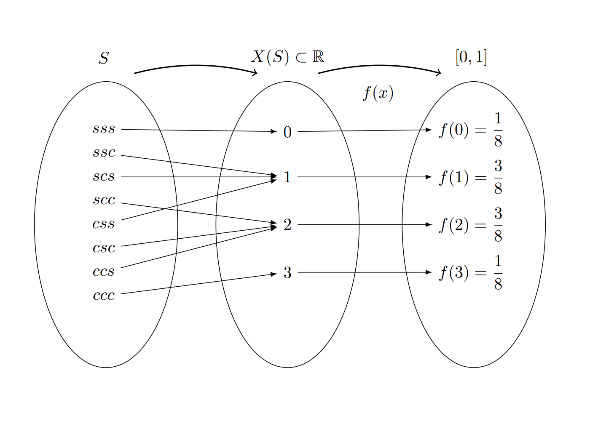
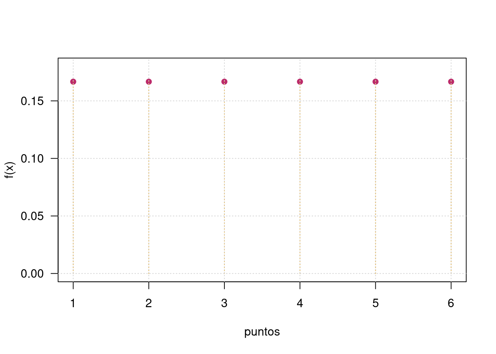

Variable aleatoria
Módulo 3- Unidad 3.1
dgonzalez
1. Guía de aprendizaje 3.1
1.1. Introducción
El concepto de variable aleatoria y sus principales características como es su tipo, su función de probabilidad, función de distribución acumulada, valor esperado y la varianza, permiten la identificación de diferentes modelos para su uso a través funciones matemáticas y su posterior aplicación computacional con el fin de representar situaciones reales en la búsqueda de solución a problemas.
1.2. Objetivos de la unidad
Al finalizar la unidad los estudiantes estarán en capacidad de IDENTIFICAR, CALCULAR y APLICAR los conceptos y las principales características de las VARIABLE ALEATORIA para representar situaciones reales en la búsqueda de soluciones a problemas o valorar los riesgos que se pueden presentar en toma de decisiones
1.3. Duración
La presente unidad será desarrollada durante la semana séptima del semestre ( 6 al 12 de septiembre de 2021). Ademas del material suministrado contaran con el acompañamiento del profesor en tres sesiones (Lunes, Miércoles y Viernes) y de manera asincrónica con foro de actividades académicas. Los entregables para esta unidad podrán enviarse a través de la plataforma Brightsce hasta el 12 de septiembre.
Para alcanzar los objetivos planteados se propone realizar las siguientes actividades
1.4. Cronograma de trabajo
| Actividad | Descripción |
|---|---|
| Individual | Taller301: El siguiente taller recoge los principales conceptos relacionados con variables aleatorias, tanto discretas como continuas y sus aplicaciones en la estimación de probabilidades |
| Reursos | Guía 3.1 |
| Capitulo 2 Navidi. Navidi, W. estadística para ingenieros y científicos. Editorial Mc Graw Hill. 2006. | |
| Capitulos 3 y 4 Walpole. Walpole, R. Myers, R. Myers, S. Ye, K. Probabilidad y Estadística para ingeniería y Ciencias.8 Ed. Editorial Pearson. 2007 |
1.5. Criterios de evaluación
Reconoce los diferentes tipos de variables aleatorias y sus principales características
Utiliza las herramientas estadística apropiadas en el calculo de probabilidades en la solución de problemas en contexto
Utiliza herramientas computacionales que le permiten representar y calcular probabilidades en la solución de problemas en contexto
Interpreta y expresa el desarrollo de los problemas con el lenguaje propio de la estadística
1.6. Entregables
| Taller 301.pdf | El taller tiene un valor de 30 puntos si es resuelto completamente y enviado dentro de los tiempos establecidos |
| Fecha | Domingo 12 de septiembr de 2021 |
| Hora límite | 23:59 hora local |
1.7. Presentaciones
2. Recursos
2.1 Variables aleatorias

Introducción
El concepto de variable aleatoria constituye uno de los conceptos principales de la probabilidad y estadística. A este concepto se pueden asociar dos paradigmas de evolución histórica segun J.A. Alberth & B. Ruiz (2013) , El primero basada en el resultado de fenómenos aleatorios y por otro lado el proceso que relaciona los conjuntos de espacio muestral y sus respectivas probabilidades, para definir el concepto de variable aleatória como función de números reales y el espacio para el sustento matemático.
Ahora, se puede relacionar el concepto de variable aleatoria a diferentes contextos donde se requiere dar respuesta a preguntas relacionadas con la ocurrencia o no de fenómenos aleatorios que eventualmente se presentarán en el futuro, como por ejemplo:
¿Cuánto tiempo se tarda un estudiante en ir a la universidad?
¿Cuál será el resultado en mi próximo examen de estadística?
El dueño de la cafetería se puede preguntar ¿Cúantas botellas de agua se venderán esta semana?
¿Cuánto tiempo tardaría la entrega de un paquete una empresa de mensajería?
¿Cuánto tiempo dura la bombilla de un vehículo?
¿Qué diámetro tendrá la perforación de una máquina en una lámina de acero que hace parte de una puerta de un vehículo?
¿ cuanto tiempo tardara la creación de la vacuna para el Covid-19?
En todos los casos se trata de preguntas que tienen diferentes respuestas, o que no tienen un único valor como respuesta. En este documento se estudiará el concepto de variable aleatoria y mediante la definición de una función matemática que nos permita caracterizar su comportamiento, realizaremos diferentes cálculos de probabilidades de interés. Para ello será necesario retomar conocimientos de cálculo integral que serán expuestos en su momento mediante funciones de fácil manejo.
En esta unidad se tratará el caso univariado discreto, luego el caso continuo,con sus principales características, conceptos relacionados con los vistos en el modulo anterior.
Definición: Variable aleatoria
Una variable aleatoria \(X\) es una función que asigna a cada valor de un espacio muestral \(S\) un numero . El conjunto formado por estos números conforman un subconjunto de los reales llamado rango de la variable X, (\(R_{_{X}}\))
Las variables aleatorias se clasifican teniendo en cuenta las características de su rango en discretas, continuas. La distribución de una variable aleatoria será univariada si se estudia el comportamiento de una sola variable y serán multivariadas si se considera el comportamiento conjunto de varias variables definidas sobre el mismo espacio muestral.Este ultimo caso sera tratado en la Unidad 3.2
Tipos de variables
Una variable \(X\) se considera DISCRETA si su rango \(R_{_{X}}\) es un conjunto finito o infinito numerable de valores.
Se considera CONTINUA si su rango \(R_{_{X}}\) es un conjunto de valores infinito no numerable y generalmente corresponde a unión de intervalos.
Ejemplo 1 : Un experimento aleatorio \(E\), consiste en lanzar una moneda balanceada al aire tres veces y observar el orden de caras (\(c\)) y sellos (\(s\)) que se obtienen en los tres lanzamientos. El espacio muestral \(S\) de \(E\), estará dado por:
\[S =\{(s,s,s),(s,s,c),(s,c,s),(s,c,c),(c,s,s),(c,s,c),(c,c,s),(c,c,c)\} \]

Donde :
\(X\) es la variable que asigna a cada resultado el número de caras en los tres lanzamientos de la moneda.
\(R_{_{X}}=\{0,1,2,3\}\) determinado por la regla de asignación: número de caras en los tres lanzamientos de la moneda y corresponde al rango de valores que puede tomar la variable aleatoria.
\(f_{_{X}}(x)=P(X=x)\) conforma la función que asigna a cada valor de la variable una probabilidad
En este ejemplo \((X=0)=\{(s,s,s)\}\) ; \((X=1)=\{(s,s,c),(s,c,s),(c,s,s)\}\) ; $(X=2)={(s,c,c),(c,s,c),(c,c,s) } $ y \((X=3) =\{(c,c,c) \}\). Bajo el supuesto que la moneda es balanceada, se cumple que los resultados en \(S\) son igualmente posibles y por lo tanto:
\[f_{_{X}}(0) =P(X=0)= \frac{1}{8} \hspace{.2cm} ,\hspace{.5cm} f_{_{X}}(1) = P(X=1)=\frac{3}{8},\] \[f_{_{X}}(2) = P(X=2)=\frac{3}{8}\hspace{.2cm} ,\hspace{.5cm} f_{_{X}}(3) =P(X=3)= \frac{1}{8}\]
2.2 Variables discretas
Como se mencionó anteriormente una variable aleatoria se considera como DIACRETA cuando el conjunto de posibles valores que puede tomar la variables es un conjunto finito o infinito numerable. En la gran mayoria de los casos este conjunto corresponde a los números enteros.
Para catacterizar la variable se define la función de distribución de probabilidad que modela la asignación de las probabilidades
Definición: Función de distribución de probabilidad
Para \(X\) un variable aleatoria discreta, su función de distribución de probabilidad estará dada por \(f(x)\), la cual proporciona las probabilidades asociadas a todos los valores de su rango \(R_{X}\) . Esta función debe cumplir las siguientes propiedades:
\(f(x) = P(X=x) > 0\)
\(\sum_{R_X} f(x) = 1\)
Por lo general este tipo de variables proceden del conteo. Ejemplos.
Número de llamadas que entran a un conmutador diariamente
Número de personas contagiadas por Covid19 durante un dia
Número de quejas reportadas a una sucursal bancaria en un dia
Número de accidentes producidos en una ciudad
Número de huevos producidos diariamenete en una avicola
Número de hijos en una familia
Número de mensajes enviados en un grupo de Whatsapp
Como complemento de \(f(x)\) y debido a que puede resultar más interesante calcular probabilidades de rangos de valores se define la función de distribución acumulada \(F(x)\)
Función de probabilidad acumulada Sea \(X\) una variable aleatoria continua con función de densidad \(f_{X}(x)\), se define la función de distribución acumulada, \(F_{X}(x)\), como:
\[F_{_X}(x)=P(X\leq x)=\sum_{x_0}^{x}f{(x)} \]
Ejemplo 1
Para la variable definida como \(X\) número de puntos obtenidos al lanzar un dado tenemos que :
| \(x_{i}\) | 1 | 2 | 3 | 4 | 5 | 6 |
|---|---|---|---|---|---|---|
| \(f(x)\) | \(\dfrac{1}{6}\) | \(\dfrac{1}{6}\) | \(\dfrac{1}{6}\) | \(\dfrac{1}{6}\) | \(\dfrac{1}{6}\) | \(\dfrac{1}{6}\) |
Esta asignación la podemos resumir en la función:
\(f(x) = \left \{ \begin{matrix} \dfrac{1}{6} & \mbox{si }\mbox{ x=1,2,3,4,5,6} \\ \\ 0 & \mbox{ en cualquier otro caso}\end{matrix}\right.\)
Tambien podemos representar esta función de manera gráfica
x=1:6
fx=rep(1,6)/6
plot(x,fx,pch=19, ylim=c(0,0.18), las=1, xlab="puntos", ylab="f(x)")
lines(x, fx, type="h", col=2)
grid()
Para la construcción de la función de distribución acumulada se acumulan los valores correspondienes a las probabilidades puntuales de manera creciente
x=1:6
fx=rep(1,6)/6
Fx=cumsum(fx)
plot(x,Fx, las=1, ylab="F(x)", xlab="puntos",pch=19, ylim=c(0,1))
lines(x, Fx, type="s", col=2)
grid()x=1:6
fx=round(rep(1,6)/6,6)
Fx=round(cumsum(fx),4)
data.frame(x,fx,Fx)## x fx Fx
## 1 1 0.166667 0.1667
## 2 2 0.166667 0.3333
## 3 3 0.166667 0.5000
## 4 4 0.166667 0.6667
## 5 5 0.166667 0.8333
## 6 6 0.166667 1.0000Ejemplo 2
El restaurante “Asados y algo más” solo da servicio mediante reservas. De acuerdo con los registros diarios en los últimos diez años se sabe que el treinta por ciento de las personas que reservan no llegan al restaurante. El restaurante tiene treinta mesas y acepta cuarenta reservas. La función de distribución probabilidad que modela el número de personas que llegan al restaurante es \(f\), dada por:
\[f_{_{X}}(x) = \left \{ \begin{matrix} \displaystyle\binom{40}{x}(0.7)^{x}(0.3)^{40-x} & \mbox{si } x=0,1,2,\ldots,40\\ & \\ 0 & \mbox{en otro caso } \end{matrix}\right. \]
En este caso se utiliza la función combinatoria vista en la guía 0.2
Para representar la función utilizamos el siguiente código
x=0:40
fx=choose(40,x)*0.70^x*0.30^(40-x)
plot(x,fx, las=1, ylab="f(x)", xlab="número personas que asisten", pch=19)
lines(x, fx, type="h", col=2)
x=0:40
fx=choose(40,x)*0.70^x*0.30^(40-x)
Fx=cumsum(fx)
plot(x,Fx, las=1, ylab="F(x)", xlab="número personas que asisten",pch=19, ylim=c(0,1))
lines(x, Fx, type="s", col=2)
grid()x=0:40
fx=round(choose(40,x)*0.70^x*0.30^(40-x),6)
Fx=round(cumsum(fx),4)
cat("P(X=0) = ", fx[1], "\n")## P(X=0) = 0cat("P(X=20) = ", fx[21], "\n")## P(X=20) = 0.003835cat("P(X<35) = ", Fx[35], "\n")## P(X<35) = 0.9914cat("P(X<=35) = ", Fx[36])## P(X<=35) = 0.99742.3 Variables continuas
Como se mencionó se considera una variable como continua cuando el conjunto de valores que puede tomar es un conjunto infinito no numerable, es decir que siempre podrá haber un valor entre dos valores de ella.
Para este caso la probabilidad se puede modelar a través de una función continua, la cual se puede visualizar al construir un gráfico de densidad a partir de una muestra de ellos. A esta función se le llama función de densidad de probabilidad
En este caso las variables por lo general proceden de una medición como por ejemplo:
Tiempo que tarda un estudiante en responder un examen
Peso de un bebe recien nacido
Edad de una persona
Tiempo que tarda un vehículo en requerir una reparación de su motor
Diámetro de un agujero realizado en una lamina de acero
Cantidad de azúcar contenida en un refresco
Proporción de cemento en concreto
Función de densidad de probabilidad La función de densidad de probablidad se define como \(f(x)\), tal que cumpla las siguientes condiciones:
\(f(x) \geq 0\)
\(\displaystyle\int\limits_{-\infty}^{+\infty}f(x)\:dx =1\)
\(P(a < X < b)=\displaystyle\int\limits_{a}^{b}f(x)\:dx\)
Para el caso continuo la función de distribución de probabilidad corresponde a una integral
Función de probabilidad acumulada
\(F_{_X}(x)=P(X \leq x)=\displaystyle\int \limits_{-\infty}^{x}f_{_X}(t)\:dt\)
\(F(x) = P(X \leq x) = P(X < x)\)
Ejemplo 3
Con base en información histórica una compañía que fabrica lavadoras determinó que el tiempo \(Y\) (en años) para que el electrodoméstico requiera una reparación mayor se obtiene mediante la siguiente función de densidad de probabilidad:
\[f_{_{X}}(x) = \left \{ \begin{matrix} \dfrac{1}{4} e^{-y/4} & \mbox{ , } y \geq 0\\ & \\ 0 & \mbox{en otro caso } \end{matrix}\right. \]
Para tener la seguridad que \(f(x)\) puede ser una función de densidad de probabilidad se debe verificar
\(\displaystyle\int\limits_{0}^{+\infty} \dfrac{1}{4} e^{-y/4} \:dx =1\)
fy=function(y){1/4*exp(-y/4)}
integrate(fy, lower=0,upper=Inf)## 1 with absolute error < 2.7e-05Al igual que R se puede utilizar SimboLab (https://es.symbolab.com/),
O tambien utilizando la plataforma Wolfram Alpha (https://www.wolframalpha.com/)

Para $P(X < 5) tenemos :
fy=function(y){1/4*exp(-y/4)}
p5=integrate(fy, lower=0,upper=5)
cat("P(X<5) = ",p5$value )## P(X<5) = 0.71349522.4 Valor esperado
El valor esperado o esperanza matemática y la varianza corresponde a dos los conceptos principales asociados a una variable aleatoria. El concepto de esperanza está relacionado en un principio con los juegos de azar, pues los jugadores querían conocer cual era el valor esperado de ganar cuando jugaban un gran número de veces.
La esperanza matemática de una variable aleatoria X, corresponde a un valor que representa el valor más probable que ocurra o la media población de la variable aleatoria denotada por \(E[x]\) o tambien \(\mu\)
Definición : Valor Esperado
Sea \(X\) una variable aleatoria discreta o continua. La esperanza matemática de \(X\) o valor esperado, \(E(X)\) o bien \(\mu\), se define respectivamente como, \[\begin{eqnarray*} E(X)&=&\sum\limits_{x}^{}x_{i}f(x_{i}) \hspace{1cm} \text{Caso discreto} \\ &&\\ E(X)&=&\int\limits_{-\infty}^{+\infty}x f(x)dx \hspace{1cm} \text{Caso continuo} \end{eqnarray*}\]
En el caso continuo y similarmente para el caso discreto.
Propiedades del Valor Esperado
\(E(k) = k\), para todo numero real \(k\).
\(E(kX) = k E(X)\), para todo número real \(k\).
\(E(aX + b) = a E(X) + b\), para todo par de números \(a\) y \(b\)
\(E(aX + bY) = a E (X) + b E(Y)\)
\(E(XY) = E(X)E(Y)\), unicamente en el caso que \(X\) e \(Y\) sean variables aleatorias independientes
2.5 Varianza
Otra caracteristica importante de las variables aleatorias corresponde a la varianza que se denota por \(V[X]\) o \(\sigma^{2}\). Antes de definirma veremos el concepto de momento de una variable aleatoria
Definición : Momento
Sea \(X\) una variable aleatoria discreta o continua. El momento de orden \(k\) se define como: \[\begin{eqnarray*} E(X^{k})&=&\sum\limits_{x}^{}x_{i}^{k}f(x_{i}) \hspace{1cm} \text{Caso discreto} \\ &&\\ E(X^{k})&=&\int\limits_{-\infty}^{+\infty}x^{k} f(x)dx \hspace{1cm} \text{Caso continuo} \end{eqnarray*}\]
Con este nuevo elemento se define la varianza de una variable aleatorias como la diferencia entre el segundo momento y el cuadrado del primer momento
Definición : Varianza
\(V[X] = E[X^{2}]-(E[X])^{2} = E[X^{2}]-\mu^{2}\)
Ejemplo 4
x=0:40
fx=round(choose(40,x)*0.70^x*0.30^(40-x),6)
Ex=sum(x*fx)
Ex2=sum(x^2*fx)
cat("E[X] =",Ex, "\n")## E[X] = 27.99995cat("V[X] = ", Ex2-Ex^2)## V[X] = 8.401435Este resultado nos indica que en promedio asisten al restaurante 28 personas de las cuarenta reservas aceptadas, con una varianza de 8.4 de la cual podemos obtener la desviación estandar y el coeficiente de variación
Ejemplo 5 Para el ejemplo 3 correspondiente al tiempo que requiere una lavadora requiere una reparación mayor, tenemos:
fy=function(y){1/4*exp(-y/4)}
fEy=function(y){1/4*exp(-y/4)*y}
fEy2=function(y){1/4*exp(-y/4)*y^2}
Ey=integrate(fEy, lower=0,upper=Inf)
Ey2=integrate(fEy2, lower=0,upper=Inf)
cat("E[X] = ", Ey$value,"\n")## E[X] = 4cat("V[X] = ", Ey2$value-Ey$value^2)## V[X] = 16Esto nos indica que el valor esperado correspondiente al tiempo en que una lavadora requiere una reparación mayor es de 4 años. Para la interpretación de la variaza podemos utilizar el concepto de desviación estandar o de coeficiente de variación